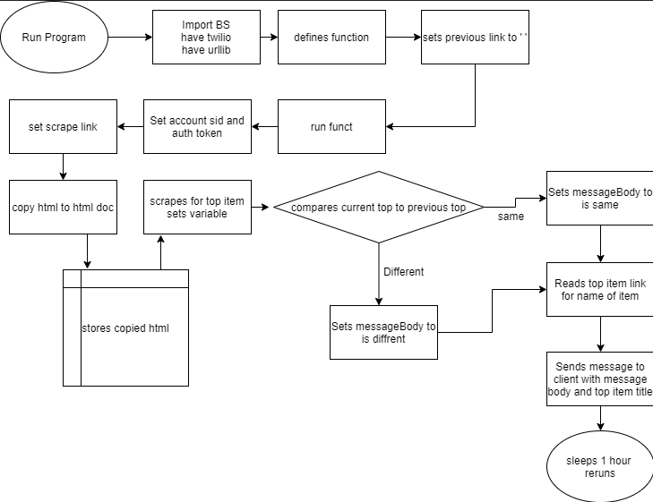

This is where I am documenting my work on the webscraping project for IB Compsci 3-4.

Tools: Twilio , BeautifulSoup4
Techniques: Variables, Conditionals, Functions, Printing
Refrences: Dev.to, W3schools,